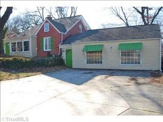

Truth in Advertising
2012-03-15
 |
| "Just Like Church," indeed. |
Perhaps the best way to counteract this tendency is to go contrarian and just tell it like it is:
A Most Unusual Property. It Looks Like The Previous Owners Had A Vision - Just Not Sure What It Was! There's Lots of Space, Fancy Deck And Pergola (With A View of Wendover Avenue), And Ginormous Space That Appears To Have Once Been A Hair Salon ["...or was it a two car garage? Hard to say!" -ed.]. And Wait Till You See The Upstairs Bathroom. Talk About Easy Access ;) Then There's The Room On The Main Floor That Has A Vaulted Ceiling And Stained Glass Window. Just Like Church!
Labels: Real Estate